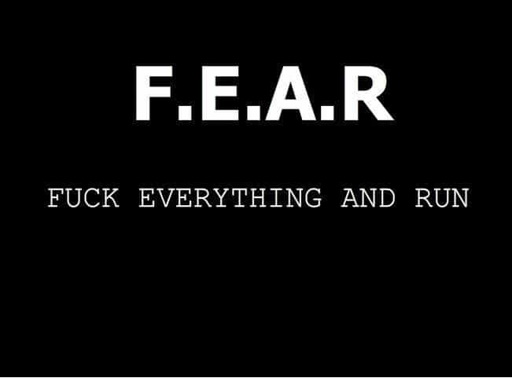

Corey is an iconoclast and the author of 'Man's Fight for Existence'. He believes that the key to life is for men to honour their primal nature. Visit his new website at primalexistence.com


There have been endless debates about what it means to be a man, and while we may never reach a consensus, I believe that we can start with a process of elimination by identifying traits that are clearly antithetical to masculinity. The following seven traits have been chosen as the great sins of manhood that plague men today.
Of the seven sins listed here, this is the most pathetic of them all. This is when a man chooses to see himself as a victim and engages in all sorts of pity-seeking behaviours from crying and complaining to throwing temper tantrums. A man who feels sorry for himself is a man who takes no action to change his circumstances. A man who wonders why his life is so miserable only succeeds in amplifying his own misery. Self-pity is akin to digging your own grave. Any man who commits the sin of self-pity deserves no mercy from this harsh world.
Complacency equates to lack of drive and resignation—it is essentially giving up without even trying. A complacent man is a drifter and a nobody who only acts when prompted by an external force. And in the original seven deadly sins listed by the Catholic church, this was known as sloth.
The problem with our modern society is that it has become far too comfortable (at least materially) for men. In the past, men would exercise their masculine energy out of sheer necessity as they faced constant danger for survival and conquest. But today, there isn’t such need. Most men work in safe, controlled environments that often don’t even require physical exertion. That, in combination with the fact that men are surrounded with various electronic screens to entertain them induces physical degradation that soon weakens the mind as well. Once trapped, even an ounce of effort starts to feel like a burden.
Complacency is no way to live. Whether you be religious or not, you must have a certain drive or a purpose. A religious man will know the path that had been laid out by his God; an atheist must create a meaning of his own to strive towards. Either way, all men must keep their passion burning and march on forward.

Cowards die a thousand times in their lives. And a man who lets fear dictate his destiny is nothing but a slave.
Fear is a trickster that has a funny way of controlling men with distorted and exaggerated imagery to inhibit action. The truth is that most of what we fear is benign. Unlike the dangers we faced during our primal times, the risks we engage in today will almost never lead to physical harm or death. Yet, how often do men submit to the gripping terror of having to approach a girl in the street, or to stand up and speak out against the toxic PC culture? How often do men quit before even starting because of their fear of failure and ridicule?
Fear, much like pain, is inevitable in life. Bravery is not about the absence of fear, but the embrace of it. Many men would do well to laugh in the face of such phantom by focusing more on pushing ahead towards their goals.

If you think about it, your entire life is all about focus of your time and energy. Without focus, you are just spilling your life away. Being distracted easily is a sign of lack of discipline, and this is becoming more and more apparent in today’s world where everyone seems to be dictated by the beeps and alerts of electronic devices.
Know that every moment that you becomes distracted is a loss: you lose your productivity, you lose your time, and you also lose sight of your mission. And anything that takes your focus away from what’s truly important to you are distractions. They can be small daily distractions like smartphones, television, and the internet, to more profound ones that derail your life like poor financial management and toxic woman.
Your attention span is finite. Guard it with your life by removing the distractions or by removing yourself from the distracting environment. You are what you focus on, so be responsible for where you direct it.
Dependency and attachment are two sides of the same coin. A man may choose to become dependent on substances and entertainment to numb himself, or get overly attached to objects, people, and matters. No matter what he decides to cling himself onto, he desperately believes that the object of his attachment will bring about happiness and fulfillment. But will it?
According to Buddhist teachings, attachment is the source of all suffering. A man in need of an external source of validation is a chained man who wavers haplessly by the circumstances outside of his life. You should also know that attachment isn’t limited to just objects of desire; you can also become attached to anger and the desire for revenge, to pain and grief, and just about anything from the past and the future in the form of regrets and worries.
Remember: if you don’t want to be dragged, all you have to do is let go.

Weakness comes in many forms and they are all equally harmful. Physical weakness is utterly inexcusable for a man and no further explanation is necessary. Mental weakness, however, is trickier. It is something that can creep into your soul at any moment, but especially during the times when you are vulnerable. As a man, you must be resolute in your belief that you will be able to handle any challenges that you face. You may not always resolve them to your liking, but you must always show strength and courage.
Weakness also creeps out in the form of supplication. Considering the audience here, I don’t think I need to go into details about all the simps who kowtow to the feminist imperative. Just be aware if and when you find yourself wavering.
Men are not born strong. Much like physical strength, the only way to defeat mental weakness is by training yourself over time through incremental steps: Learn to say ‘no’ to bullshit. Draw the line and stand up for yourself. Head towards fear and discomfort instead of avoiding them. Stop making lame excuses and just do it. You have to push your boundaries to shed your weakness; constantly telling yourself that you’re an “alpha” is not going to make you one.
Lack of will is the mother of all other sins listed here. A man without the force of will is no man at all. Without that fire which drives a man, nothing would be possible. It is especially difficult for men today—especially young men—to discover and kindle this virtue on their own. Men in today’s Western societies have been all but forsaken and pushed under to make room for entitled women and sexual deviants. In our feminized culture that seeks to destroy masculinity, it’s not surprising to see many men with low morale who have seemingly given up in their fight for existence. As bad as things may be, know that this is a condition to overcome, not something to lament.
Will is much more difficult to cultivate than strength. Some men just seem to be gifted with a strong will, but it is possible to cultivate it. By implementing some of the above mentioned tips and by dedicating every day to be better than the one before, you will forge your own iron will slowly but surely. It also helps to read about other great men as role models to emulate—having real-life mentors and other supportive men are even better. And last, remember: never give up. You just do not give up under any circumstances, life does not permit it.
 If you like this article and are concerned about the future of the Western world, check out Roosh's book Free Speech Isn't Free. It gives an inside look to how the globalist establishment is attempting to marginalize masculine men with a leftist agenda that promotes censorship, feminism, and sterility. It also shares key knowledge and tools that you can use to defend yourself against social justice attacks. Click here to learn more about the book. Your support will help maintain our operation.
If you like this article and are concerned about the future of the Western world, check out Roosh's book Free Speech Isn't Free. It gives an inside look to how the globalist establishment is attempting to marginalize masculine men with a leftist agenda that promotes censorship, feminism, and sterility. It also shares key knowledge and tools that you can use to defend yourself against social justice attacks. Click here to learn more about the book. Your support will help maintain our operation.
Read More: Social Justice Warriors’ Updated Version Of The Seven Deadly Sins